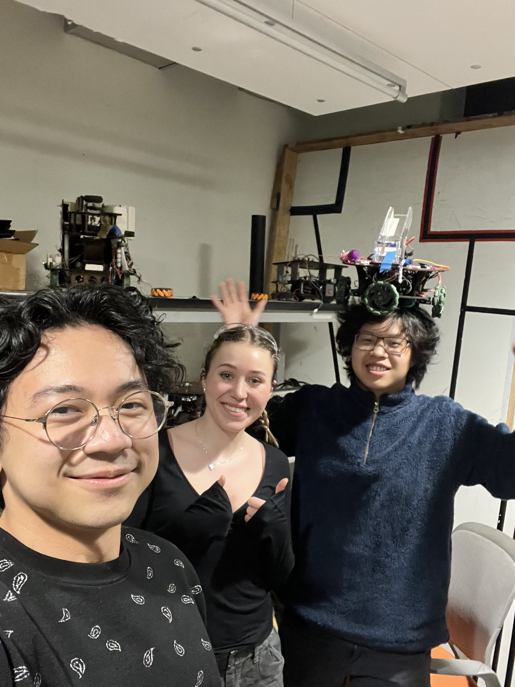

Brief Takeaways and wrap up

Overall, our team took a very modular approach to the project which allowed for easier sub-system integration. We experienced a variety of mechanical design challenges that required iterating quickly. As we continued to redesign and add more hardware to our robot throughout the debugging process, we encountered additional unexpected challenges such as the gear boxes for the small motors breaking down due to heavy loads. On the electronics side, we quickly realized that the number of pins available in the Arduino were limited, so we needed to be clever and judicious about our overall strategy (e.g. using one ultrasonic sensor instead of three). Although this was a highly involved process with many late working hours, our team learned a lot from the experience and is proud to have successfully completed this project.
Shout outs
A huge thank you to the ME 210 teaching team for putting in so many hours into helping students debug in lab. Shout out to Kevin Boateng, for all of your time and energy lending a helping hand throughout this project in a busy quarter..